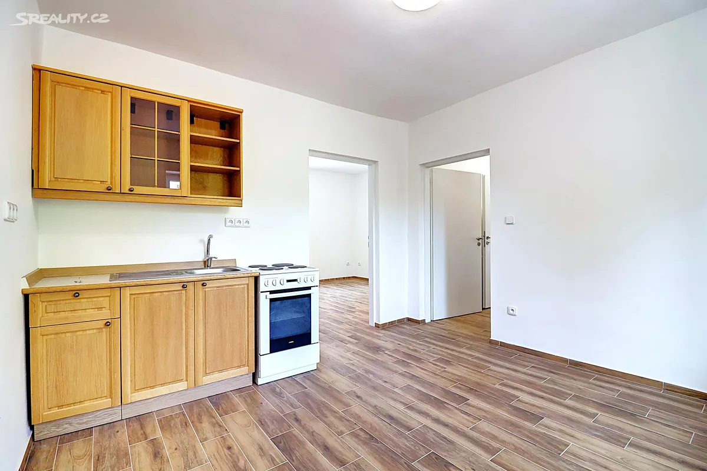

V prodeji8 fotografií
V prodeji8 fotografiíRekonstrukce domu před prodejem
Rekonstrukci zaplatíme my.
O zhodnocení se podělíme až po prodeji.
Zajistíme a zaplatíme schválené opravy vašeho domu. Naší odměnou je podíl pouze z kladné hodnoty navíc dosažené skutečným prodejem.
Opravy platíme myVypořádání po prodejiPodíl z hodnoty navíc

Dokončená realizace REKO RealityHlinsko – KoutyDokončené realizace REKO Reality
Celá nabídka Aktuálně v prodeji
Dvě nemovitosti, které si můžete prohlédnout osobně.
V prodeji8 fotografií V prodeji8 fotografií
V prodeji8 fotografiíCeny a dostupnost podle inzerátů k 6. říjnu 2026. Aktuální stav ověříte u nabídky.
Pro majitele nemovitostíOd prvního posouzení
Od prvního posouzení
k připravenému domu.
Rekonstrukci stavíme na rozpočtu a reálných možnostech prodeje. Rozsah i vypořádání si domluvíme předem.
- 01
Ověříme, co dává smysl
Posoudíme stav domu a porovnáme prodej s opravami i bez nich.
- 02
Zaplatíme a provedeme opravy
Schválenou rekonstrukci hradíme my. Zajistíme dodavatele a koordinaci prací.
- 03
Po prodeji rozdělíme hodnotu navíc
Z uskutečněného prodeje se vrátí naše investice a uhradí náklady prodeje. Podíl získáme jen z kladné hodnoty navíc.
Poradna
Všechny články Co si ujasnit před prodejem domu.
Rekonstrukce domu před prodejem: kdy se vyplatí
Porovnejte prodej domu s opravami a bez nich. Praktický postup, modelový výpočet nákladů a kontrola, zda rekonstrukce obstojí i při nižší prodejní ceně.
Jak připravit starší dům na prodej
Praktický postup od vyklizení a přípravy fotografií po podklady a první prohlídky. Jak ukázat starší dům srozumitelně a bez zakrývání jeho stavu.
Jaké dokumenty připravit k prodeji domu
Přehled podkladů k prodeji domu: list vlastnictví, stavební dokumentace, PENB i doklady o opravách. Co ověřit a jak si uspořádat chybějící dokumenty.
Chystáte se prodat?Zjistěte, co může rekonstrukce
Posoudit můj dům Zjistěte, co může rekonstrukce
přinést vašemu domu.
Schválenou rekonstrukci zaplatíme my. Odměnu získáme až z kladné hodnoty navíc po prodeji.